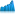

| PMD | Files | Code Lines | Prio1 | Prio2 | Prio3 | Total | Defect Density | Chart | ||||
|---|---|---|---|---|---|---|---|---|---|---|---|---|
| KPI | ΔLKG | Δ1D | Δ7D | Δ28D | ||||||||
| Totals/Deltas (standard ruleset) |
0 | 3 | 0 | 0 | 0 | 0 | 0.00 |
0.00 |
0.00 |
0.00 |
0.00 |
 |
Density is the number of rule violations per 1000 lines of code. It is colored red when there are 8.0 or more, amber for the range 1.0 to 8.0 and green when less than 1.0.
Priority the rule violations are separated into 5 priorities (only 3 are displayed). Priority 1 is the most serious and Priority 5 is the least serious.
Files is the number of files in the project containing rule violations.